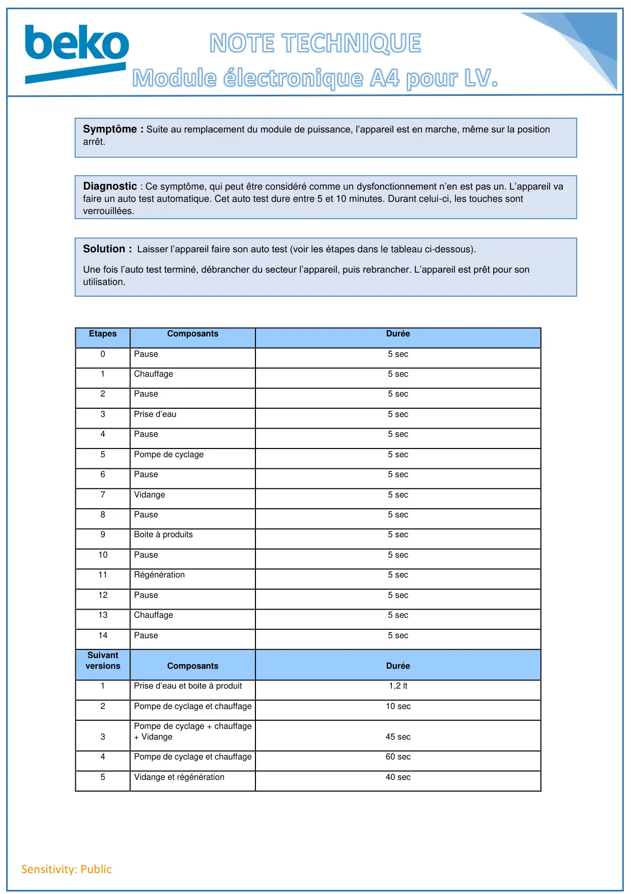

Module Electronique A4 en AutoTest USINE

Sensitivity: PublicEtapesComposantsDurée0Pause5 sec1Chauffage5 sec2Pause5 sec3Prise d’eau5 sec4Pause5 sec5Pompe de cyclage5 sec6Pause5 sec7Vidange5 sec8Pause5 sec9Boite à produits5 sec10Pause5 sec11Régénération5 sec12Pause5 sec13Chauffage5 sec14Pause5 secSuivantversionsComposantsDurée1Prise d’eau et boite à produit1,2 lt2Pompe de cyclage et chauffage10 sec3Pompe de cyclage + chauffage+ Vidange45 sec4Pompe de cyclage et chauffage60 sec5Vidange et régénération40 secSymptôme : Suite au remplacement du module de puissance, l’appareil est en marche, même sur la positionarrêt.Diagnostic : Ce symptôme, qui peut être considéré comme un dysfonctionnement n’en est pas un. L’appareil vafaire un auto test automatique. Cet auto test dure entre 5 et 10 minutes. Durant celui-ci, les touches sontverrouillées.Solution : Laisser l’appareil faire son auto test (voir les étapes dans le tableau ci-dessous).Une fois l’auto test terminé, débrancher du secteur l’appareil, puis rebrancher. L’appareil est prêt pour sonutilisation.
1 / 1